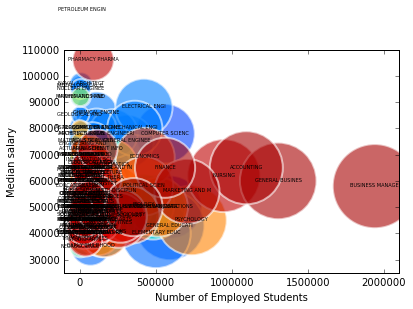

October 25, 2015
Overview:
This is an exploratory analysis of salary outcomes across various majors in the US. Also it would attempt to give the viewer a quick view of how various college majors are placed in the job market relatively. This features mean salaries and respective 25th and 75th percentile salary plotted to give a comprehensive outlook towards the salary distributiion itself in the following posts.
View this project research report.
Dataset:
Although this data is smaller in size, it is a high dimentional sample with 17 features that makes it interesting for us to work with. Our dataset is sourced from census.org of college majors 2012-13 from fivethirtyeight
Visualization Technique:
We have used the Bubble plot to visualize the magnitude of the student sample in terms of area of the bubble, the y-axis is the median salary of college majors, the x-axis is the total number of employed students in the respective majors. Bubbles are color coded besed on the type of major.
# Bubble plot of Median salary Vs number of students employed.
# We used four variables to give a comprehensive view of the college majors salary outcomes
# and those are: 1)Median salary in X-axis
# 2)Employed # of students
# 3)Color code for each major based on the major code
# 4)Bubble area for the total number of students graduated.
import matplotlib.pyplot as plt
import plotly.plotly as py
# plot.ly is the api that we used to get the color smoothening and spacial spread
import urllib2
# (*) urllib2 for in-session downloads
from pylab import *
from scipy import *
import numpy as np
import pandas as pd
%matplotlib inline
# Import data file from URL into pd datafram in session
salary_data_url = 'https://raw.githubusercontent.com/fivethirtyeight/data/master/college-majors/all-ages.csv'
data_file = urllib2.urlopen(salary_data_url)
df = pd.read_csv(data_file, sep=',')
unemp_data_url = 'https://raw.githubusercontent.com/fivethirtyeight/data/master/college-majors/recent-grads.csv'
data_file2 = urllib2.urlopen(unemp_data_url)
unemp_df = pd.read_csv(data_file2, sep=',')
salary_bubble = plt.figure()
# set new figure object to pass it to the plot.ly api
ax = salary_bubble.add_subplot(111)
plt.xlabel('Number of Employed Students')
plt.ylabel('Median salary')
plt.ylim([25000, 110000])
plt.xlim([-100000, 2100000])
scatter = ax.scatter(
df['Employed_full_time_year_round'],
df['Median'],
c=df['Major_code'], # using majorcode as our color scale
s=4*sqrt(df['Total']), # taking square root to set the area for the bubbles
linewidths=2,
edgecolor='w',
alpha=0.6
)
for i_X, X in df.iterrows():
plt.text(
X['Employed_full_time_year_round'],
X['Median'],
X['Major'][0:15], # only the first 15 letters
size=5,
horizontalalignment='center'
)
import cufflinks as cf
#importing cufflinks api to set the zooming for the plot
cf.set_config_file(offline=False, world_readable=True, theme='pearl')
py.iplot_mpl(salary_bubble, filename='s6_bubble-chart') #passing the salary object to get the plot.ly style graph
from pylab import *
from scipy import *
import matplotlib.pyplot as plt
import numpy as np
import pandas as pd
output_category=[]
# a list to store all the categories
for xcategory in df['Major_category']:
if xcategory not in output_category:
output_category.append(xcategory)
print len(output_category)
#check the length of the list of categories to set colors based on its number
colour = ["teal","brown","goldenrod", "purple", "orange",
"mediumspringgreen", "black","cyan","deeppink",
"yellow","pink", "gold","olive","orchid","tomato","dodgerblue","darkorange" ]
# setting colors manually and I chose minimal color palette
cat = []
area=[]
category_employed = []
category_median = []
small_fig_bubble = plt.figure()
#'for' loop to set the values of those 16 majors by taking the mean salaries,totals etc
for category in output_category:
cat.append(category)
category_employed.append((np.mean(df[df['Major_category'] == category].Employed)))
category_median.append((np.mean(df[df['Major_category'] == category].Median)))
area.append(6*sqrt((np.mean(df[df['Major_category'] == category].Total)))) #the area is magnified by 6 times to show a real sense of area.
for vals in range(0, 16):
text(category_employed[vals], category_median[vals], cat[vals], size=8) #infusing the lables into the 16 categories
scatter(category_employed,category_median,c=colour,s=area,linewidths=2,edgecolor='w',alpha=0.6)
plt.xlabel('Number of Employed Students')
plt.ylabel('Median salary')
plt.ylim([30000, 80000])
plt.xlim([1000, 660000])
show() # we get a clearer picture of the story by categorizing the data points
import cufflinks as cf
cf.set_config_file(offline=False, world_readable=True, theme='pearl')
py.iplot_mpl(small_fig_bubble, filename='s6_bubble-chart')
# again we want to use plot.ly to give a pritty image of the above visualization
# but this time around the colors have been chosen and set by us!